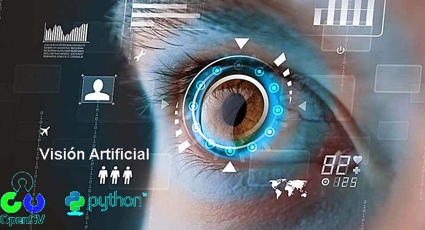
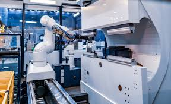
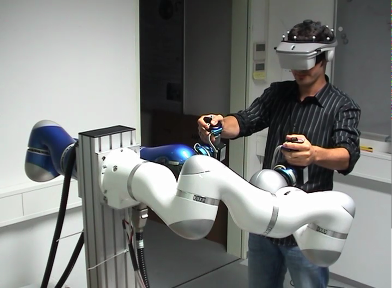
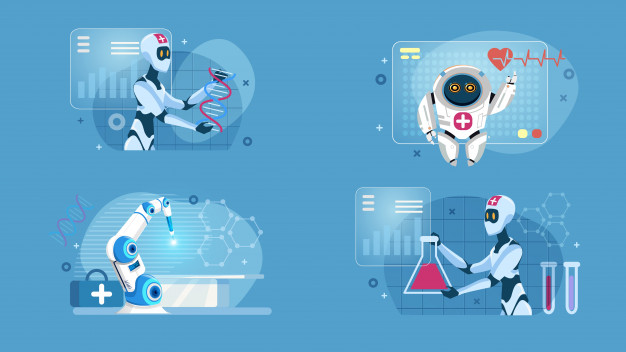

Inteligencia artificial y los videojuegos: Un aumento a la realidad
Gracias al desarrollo de las nuevas tecnologías, la Inteligencia Artificial (IA) se ha convertido en uno de los campos más importantes hoy en día. Actualmente se puede ver aplicada a diversos sectores como la industria, la medicina o incluso las finanzas. Sin embargo, uno de los sectores que en los que está comenzando a desarrollarse es en la industria de los videojuegos.
Varios investigadores de la Universidad de San Petersburgo han analizado y puesto a prueba distintos algoritmos para la aplicación de la Inteligencia Artificial en videojuegos. También contrastaron las diversas estratégias de toma de decisiones que se podrían aplicar en videojuegos multijugador en línea. Es decir, en videojuegos como el League of Legends o el Dota 2, algunos de los más famosos.
Un análisis realizado por Forbes ha analizado los ingresos que generará la Inteligencia Artificial. Se estima que los ingresos aumentarán desde los 1’62 billones de dólares en 2018 hasta los 32’1 billones en 2025. El Doctor Daniel Jiang, un profesor de ingeniería industrial de la Universidad de San Petersburgo también reflexiona sobre esto. Comenta que es emocionante ver el increíble éxito y progreso que se ha hecho estos últimos años. También anima a la búsqueda de métodos más sofisticados para lograr una toma de decisiones mejor
Aqui algunos ejemplos de la inteligencia artificial en los videojuegos
1. Mejora en la I.A de los npc
En la ultima decada, hubo un incremento en los juegos, debido a la implementacion de la inteligencia artificial en los comportamientos de los npc de los videojuegos, haciendo que estos ya mensionados, no solo piensen si no ejecuten diferentes estrategias para completar un objetivo o incluso añadir una personalidad para el personaje
2. IA's creando juegos
La técnica sigue evolucionando: un equipo de investigadores de la Universidad de Lyon (Francia), la Universidad de Purdue (EEUU) y el editor de videojuegos Ubisofthan publicado un artículo que describe cómo, en el futuro, los diseñadores de juegos simplemente podrían dibujar un horizonte y dejar que la IA complete todos los detalles geológicos.
3. IA que crea animaciones
Esta IA, en concreto, ha sido entrenada para crear animaciones de la conocida serie animada ‘Los Picapiedras’. Solamente es necesario proporcionarle una descripción de lo que quieres que ocurra en una escena y en base a eso es capaz de hacer ilustraciones. Y no solo ilustra a los personajes, sino que por supuesto también el entorno, accesorios y completamente todo.
Es tan sencillo producir una escena de ‘Los Picapiedras’ como indicarle a la IA «Pedro, que está llevando un sombrero rojo, está caminando en el salón»; simplemente con este trozo de texto es capaz de generar una escena completa
4. La IA que aprendió a dominar el escondite tras 380 millones de rondas
Mediante el simple juego del escondite, realizado cientos de millones de veces, dos equipos opuestos de agentes de IA desarrollaron complejas estrategias para esconderse y buscar, que incluían el uso de distintas herramientas y formas de colaboración. La investigación también ofrece información sobre la estrategia de investigación dominante de OpenAI: escalar drásticamente las técnicas de IA existentes para ver qué propiedades surgen.
Inteligencia artificial y robótica: la búsqueda de la perfección en la producción
La inteligencia artificial es uno de los campos que más está revolucionando nuestra vida. Una de las principales temáticas dentro de la inteligencia artificial que está revolucionando nuestra sociedad es el machine learning o aprendizaje automático, íntimamente ligado a la inteligencia artificial robótica. Los beneficios del machine learning son tan notorios que ocupan nuestro día a día en nuestras búsquedas web, nuestras compras, las películas que vemos, nuestro geoposicionamiento,… Sin embargo, no es el único campo dentro de la inteligencia Artificial que está rompiendo con una época y cambiando nuestro estilo de vida. Este es el caso de la robótica, que a pequeños pasos está irrumpiendo en nuestras casas con limpiadores inteligentes, con cortadoras de césped y en un futuro próximo con drones que nos traerán la compra con un simple click. Aún cuando antaño nos imaginábamos un futuro con robots con fisiología humana, con piernas y brazos, capaces de moverse y adaptarse a su entorno, no éramos conscientes de que esto sería uno de los temas más complejos de alcanzar. La aplicación concreta de la inteligencia artificial a la robótica tiene como objetivo que los robots puedan realizar tareas de forma autónoma, pero no solo en lo que a la propia acción se refiere, sino también a que sean capaces tomar decisiones sobre qué hacer en un entorno determinado de trabajo bajo unos parámetros preestablecidos. En este sentido, los cobots son un buen ejemplo de cómo la inteligencia artificial puede acelerar los procesos para lograr la perfección en la producción, ya que son mucho más que tan solo máquinas que realizan el trabajo más arduo, aburrido o peligroso. Pero ¿cuáles son las aplicaciones prácticas de inteligencia artificial que pueden realizar los robots colaborativos?
Aplicaciones prácticas que pueden realizar los cobots dotados de IA
Los cobots son mucho más sencillos de utilizar que las soluciones de automatización tradicionales.pero es que además, pueden desarrollar aplicaciones prácticas de inteligencia artificial. ¿Cuáles son aquellas que pueden contribuir a lograr la perfección en la producción?
1. Monitoreo
Un cobot controlado por inteligencia artificial puede detectar gracias a esta aplicación de monitoreo condiciones cambiantes de espacio en el lugar de trabajo. De esta forma podrá monitorear, es decir, recoger, analizar y utilizar la información para optimizar su funcionamiento. Para desarrollar esta aplicación con la máxima eficacia es fundamental medir y calcular los resultados del cobot a través de los Indicadores clave de rendimiento o KPIs, es decir las métricas que se utilizan para controlar el rendimiento en una línea de producción. En este sentido, los KPIs son esenciales para monitorear el cobot y guiarle en las decisiones que le ayuden a obtener el máximo rendimiento.

2. Visión artificial
Las ventajas y aplicaciones de la visión artificial en los robots colaborativos son tan importantes que les permite realizar tareas impensables hasta ahora. Un cobot dotado de visión artificial -es un subcampo de la inteligencia artificial- podrá, entre otras acciones, detectar y reconocer la presencia y orientación de un objeto o pieza, realizar tareas de inspección y selección, así como analizar los resultados de una operación y tomar las decisiones correspondientes.

3. Adaptación
Un robot colaborativo dotado de inteligencia artificial puede ajustar la orientación de la tarea a medida que el resto de las máquinas se mueven. Además, también son capaces de controlar la fuerza requerida para una aplicación concreta como puede ser la de pick & place, o detectar una posible colisión y evitarla consecuentemente.

4. Aprendizaje
Gracias a los conocimientos adquiridos, un cobot puede predecir y diagnosticar errores en la producción mediante la identificación automática de los patrones de las tareas que esté realizando. Todo ello con el objetivo de lograr un mejor rendimiento.
5. Implementación
Esta es una de las principales ventajas de la inteligencia artificial aplicada a la robótica, y es que un cobot puede comenzar a realizar una primera tarea en poco más de una hora, sin necesitad de la ayuda de programadores informáticos o personal externo especializado. Además, los robots colaborativos pueden hablar entre ellos gracias la comunicación inteligente que aumenta su eficiencia permitiendo el intercambio de cualquier flujo de datos.
6. Supervisión de maquinaria
Por último, y no menos importante, un brazo robótico dotado de inteligencia artificial puede realizar aplicaciones de supervisión de maquinaria, controlándolas, organizando tareas y mejorando la eficacia de equipos cercanos. Y es que los cobots de Universal Robots son compatibles con todas las aplicaciones de supervisión de maquinaria.
En definitiva, la inteligencia artificial aplicada a la robótica colaborativa se traduce en mejoras significativas de los procesos productivos como pueden ser:
+Detectar que algo no funciona bien en la línea de producción y detener la actividad.
+Identificar mejoras en la forma en la que se realiza una determinada tarea, lo que significa una plena optimización.
+Recopilar datos y analizarlos para ayudar en la toma de decisiones para la mejora de los procesos.
Todo ello gracias a un aprendizaje automatizado que hace que las tareas se realicen de una forma rápida, eficiente y productiva. Y con la ventaja de poder trabajar codo con codo con los operarios, mejorando así las ventajas competitivas de tu negocio.
Inteligencia artificial robótica: En otros campos de uso
Por otro lado, La revolución que implica la inteligencia artificial robótica no sólo la veremos implantada en nuestras actividades más básicas en sociedad sino que tendrá un importante impacto a la hora de hacer política y en conflictos bélicos. Proyectos de desarrollo de equipos militares como los drones autónomos letales preceden al posible desarrollo de políticas entre países similares a las adoptadas con las bombas nucleares. Como todo arma con capacidad de devastación, es necesario crear tratados que regulen esta tecnología. Así, expertos en la materia urgen a crear un marco de regulación que limite el uso de la inteligencia artificial robótica en fines bélicos. En definitiva, la inteligencia artificial robótica cambia y cambiará nuestro mundo. Hará nuestra vida más simple pero será también un arma de doble fijo que puede llegar a ser devastadora. Es importante por ello regularizar cuanto antes su uso para que no se haga un uso incorrecto de la misma.
 Gracias al desarrollo de las nuevas tecnologías, la Inteligencia Artificial (IA) se ha convertido en uno de los campos más importantes hoy en día. Actualmente se puede ver aplicada a diversos sectores como la industria, la medicina o incluso las finanzas. Sin embargo, uno de los sectores que en los que está comenzando a desarrollarse es en la industria de los videojuegos.
Gracias al desarrollo de las nuevas tecnologías, la Inteligencia Artificial (IA) se ha convertido en uno de los campos más importantes hoy en día. Actualmente se puede ver aplicada a diversos sectores como la industria, la medicina o incluso las finanzas. Sin embargo, uno de los sectores que en los que está comenzando a desarrollarse es en la industria de los videojuegos.
 1. Mejora en la I.A de los npc
1. Mejora en la I.A de los npc
 2. IA's creando juegos
2. IA's creando juegos La inteligencia artificial es uno de los campos que más está revolucionando nuestra vida. Una de las principales temáticas dentro de la inteligencia artificial que está revolucionando nuestra sociedad es el machine learning o aprendizaje automático, íntimamente ligado a la inteligencia artificial robótica.
La inteligencia artificial es uno de los campos que más está revolucionando nuestra vida. Una de las principales temáticas dentro de la inteligencia artificial que está revolucionando nuestra sociedad es el machine learning o aprendizaje automático, íntimamente ligado a la inteligencia artificial robótica. 1. Monitoreo
1. Monitoreo 5. Implementación
5. Implementación  6. Supervisión de maquinaria
6. Supervisión de maquinaria